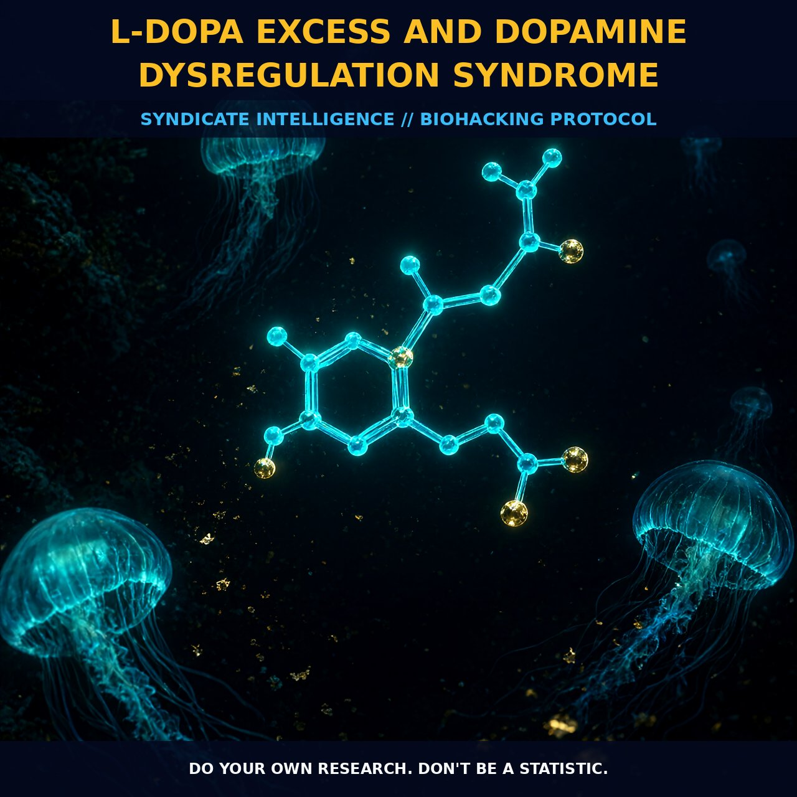

L-DOPA Precision: Preventing Dopamine Dysregulation via MAO-B Titration

1. The Biochemical Architecture of Dopamine
Dopamine is not merely a mood regulator; it is a catecholamine neurotransmitter synthesized from tyrosine and DOPA, serving as the critical biochemical precursor to norepinephrine and epinephrine. Within the human brain, approximately 400,000 dopamine-producing neurons orchestrate reward processing, motivation, motor control, and hormonal secretion. While the absence of dopamine manifests as Parkinsonian tremors, social withdrawal, and chronic fatigue, excessive levels trigger a specific iatrogenic disturbance known as Dopamine Dysregulation Syndrome (DDS).
This syndrome is particularly prevalent in patients with Parkinson’s disease who consume excessively high doses of L-DOPA, yet it increasingly appears in schizophrenia and ADHD populations. The condition represents a fundamental breakdown in the natural feedback loop where dopamine levels spiral beyond the optimal range, impairing both memory retention and motor precision.
The regulatory architecture relies heavily on Monoamine Oxidase B (MAO-B), an enzyme that actively consumes surplus dopamine to maintain homeostasis. If MAO-B activity is insufficient, dopamine levels climb uncontrollably, leading to aggression and paranoia. Conversely, excessive MAO-B depletes dopamine, leaving the individual unmotivated while releasing aging free radicals. This balance is illustrated by the inverted-U curve of D1 receptor actions on prefrontal neurons: both excessively low and excessively high dopamine levels impair working memory.
2. Biological Leverage and Systemic Impact
L-Dopa serves as a direct precursor that easily crosses the blood-brain barrier, providing raw material for increased catecholamine production without requiring complex metabolic conversion. When supplemental L-Dopa is introduced, it can elevate libido and testosterone while buffering the body against depletion during intense physical or mental stress. However, the line between therapeutic optimization and pathological dysregulation is thin.
Excessive self-directed dosing beyond motor control needs leads to an addictive pattern of therapy, where the user administers doses in excess of requirement, mimicking a reward-seeking addiction cycle. This state is characterized by symptoms such as pathological gambling, hypersexuality, compulsive eating, and heightened aggressiveness.
The biological impact extends beyond the central nervous system into the digestive tract, blood vessels, and immune system, suggesting that dopamine modulation is a systemic lever for optimization. The presence of specific dopamine receptors correlates with sensation-seeking behavior and risk-taking propensity, indicating that individual genetic variance plays a significant role in susceptibility to dysregulation.
3. Protocol Implementation and Tactical Dosing
To modulate dopamine effectively, one must distinguish between precursor availability and receptor sensitivity. Supplementing with L-Dopa, often sourced from Mucuna Pruriens, provides a direct route to increase extracellular dopamine levels. Animal studies suggest that compounds like phenylpiracetam can also enhance cognition by acting as a dopamine reuptake inhibitor, thereby increasing the availability of dopamine in synaptic spaces.
For those managing deficiency or seeking motivational lift, maintaining sufficient tyrosine levels offers a built-in regulatory buffer, ensuring the brain has adequate material to synthesize catecholamines as demand increases during stress. Dietary sources such as turkey, chicken, eggs, cottage cheese, and nuts provide steady amino acid supplies that support sustained production without the spike-and-crash profile of direct supplementation.
When implementing L-Dopa, monitor for signs of overshoot such as agitation or compulsive behaviors, which indicate that MAO-B may be overwhelmed or that doses exceed the threshold for motor control. Dosing should be titrated to find the individual sweet spot on the inverted-U curve, avoiding the memory-impairing effects associated with extremes of high and low dopamine.
4. Prostar Life Hack
Master your MAO-B efficiency: To prevent Dopamine Dysregulation Syndrome while maximizing L-Dopa benefits, avoid consuming heavy protein meals within one hour of taking L-DOPA supplements. Amino acid competition can reduce absorption, but more importantly, ensuring your dietary tyrosine levels are robust allows you to rely on natural synthesis buffers rather than excessive exogenous dosing. Titrate L-DOPA in micro-doses upward until motor control is sharp but before compulsion sets in—aim for the 'flow' state, not the 'high'.
Prostar Life Hack
Master your MAO-B efficiency: To prevent Dopamine Dysregulation Syndrome while maximizing L-Dopa benefits, avoid consuming heavy protein meals within one hour of taking L-DOPA supplements. Amino acid competition can reduce absorption, but more importantly, ensuring your dietary tyrosine levels are robust allows you to rely on natural synthesis buffers rather than excessive exogenous dosing. Titrate L-DOPA in micro-doses upward until motor control is sharp but before compulsion sets in—aim for the 'flow' state, not the 'high'.
[ AUTHOR: LEAD TECHNICAL RESEARCHER ]